Problema
287:
Siga
el triangle equilàter 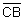 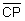 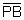 . Siguen I, J, i P els punts mig dels seus costats. Dividim
el costat
. Siguen I, J, i P els punts mig dels seus costats. Dividim
el costat
Siga
H la projecció ortogonal de I sobre  i K la projecció
ortogonal de F sobre .
i K la projecció
ortogonal de F sobre .
Siga
R el simètric de H respecte de I, S el simètric de K respecte de J, U el
simètric de E respecte de I i T el simètric de F respecte de J.
Les
rectes RU i TS s’intersecten en V.
U,
A, T estan alineats?
RVSH
és un quadrat?.
Clapponi,
P. (1997): Découpage dans un triangle. Petit X 34,pag 54. [Clapponi es un
seudónimo de Philippe Clarou - Bernard Capponi].
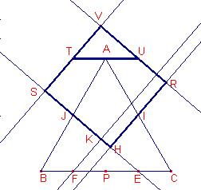
Solució
de Ricard Peiró i Estruch Profesor de Matemáticas del IES
1 de Xest (València) (17 de diciembre de 2005) :
Siga
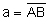
Els
triangles 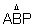 són semblants i en
proporció 2:1.
són semblants i en
proporció 2:1.
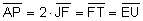 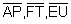
Aleshores,
T, A U estan alineats.
Siga
 .
.
Aplicant
el teorema de Pitàgores al triangle rectangle , 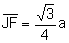
 .
.
Suposem
que RVSH és un rectangle, els seus angles de 90º.
Siga
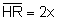 ,
,
Siga
 ,
,  .
.

Aleshores,
els triangles 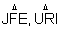
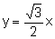 . Aleshores,
. Aleshores,
 .
.
Aleshores,
els triangles  són semblants.
Aplicant el teorema de Tales:
són semblants.
Aplicant el teorema de Tales:
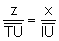 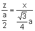 .
.
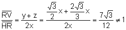
Aleshores,
RVSH no és un quadrat.